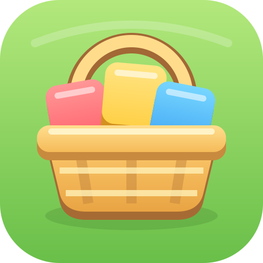

Корзинка с пикселями
Мой выбор. Связывает название с собиранием цветных кусочков; корзинка общая для всех зверят.
У пикника стало больше гостей. Можно сделать знаком игры то, что они собирают, или место, куда всё приносят.

Муравей остаётся в игре. Для общего логотипа пробуем другие образы.
Во вкладке и на телефоне
Pixel PicnicИконка на главном экране